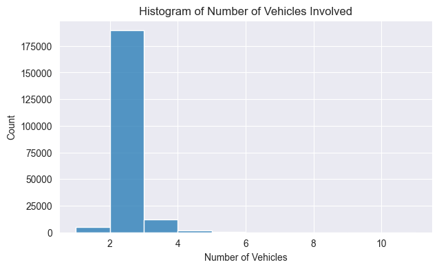
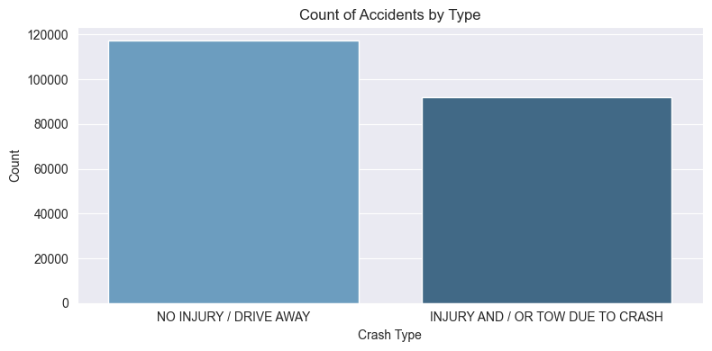
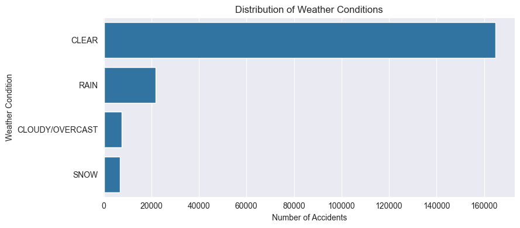
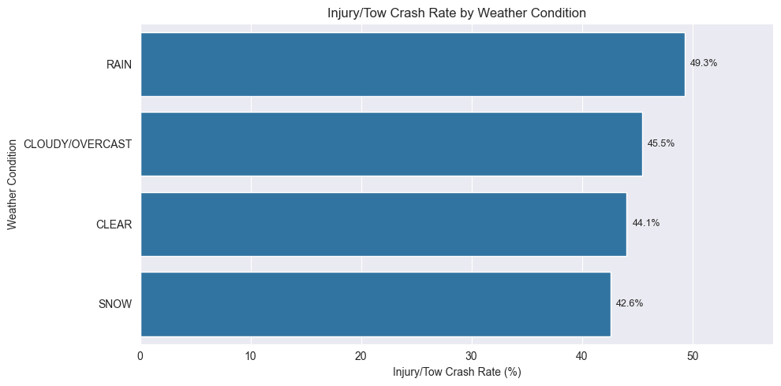
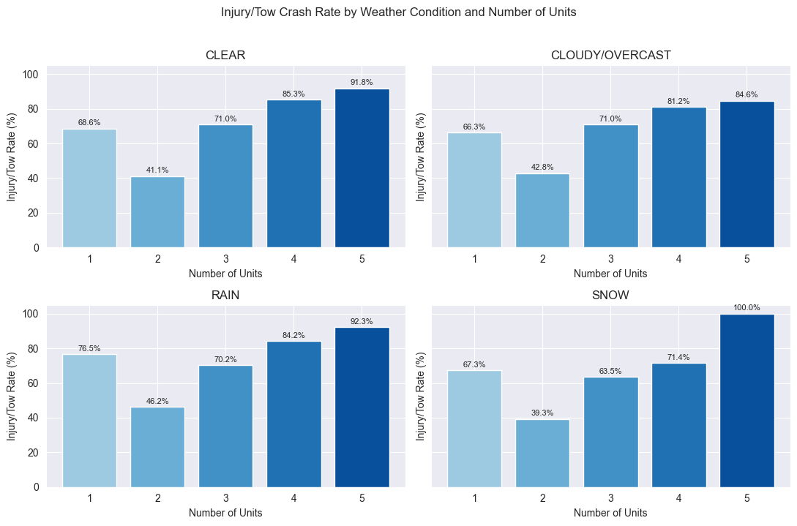
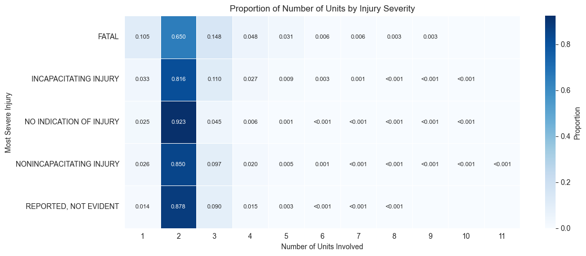

Most crashes involve two units
Most records involve two units. Crashes with more units are less common.
Prediction
EDA
Most records involve two units. Crashes with more units are less common.
No-injury cases are the largest group, so accuracy should be read with balanced metrics.
Rain, wet surfaces, and higher unit counts are associated with higher injury/tow rates.






Notes
Rare severe and fatal injuries are hard to detect. The model should not be used for emergency triage.
Because no-injury cases are common, accuracy should be read together with Macro F1 and recall.
Feature importance and EDA patterns show associations, not causes.
A model trained on one city's records may not transfer to other cities without retraining.